Data Handling and Presentation
Section 4.1
Page No. 75
Figure it Out
Q.1. What would you do to find the most popular game among Naresh’s and Navya’s classmates?
Ans. One of the ways could be to arrange and organize the given data in a table. Think of some other ways.
Q.2. What is the most popular game in their class?
Ans. Hockey (frequency \(-\) 8).
Q.4. Pari wants to respond to the questions given below. Put a tick (✓) for the questions where she needs to carry out data collection and put a cross (⨉) for the questions where she doesn’t need to collect data. Discuss your answers in the classroom.
- What is the most popular TV show among her classmates?
- When did India get independence?
- How much water is getting wasted in her locality?
- What is the capital of India?
Ans.
- ✓
- ⨉
- ✓
- ⨉
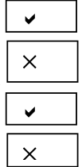
Page No. 76
Figure it Out
Q.1. Complete the table to help Shri Nilesh to purchase the correct numbers of sweets:
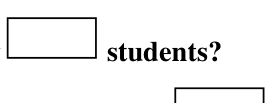
- How many students chose jalebi? \(\underline{\qquad}\)
- Barfi was chosen by \(\underline{\qquad}\) students?
- How many students chose gujiya? \(\underline{\qquad}\)
- Rasgulla was chosen by \(\underline{\qquad}\) students?
- How many students chose gulab jamun? \(\underline{\qquad}\)
Shri Nilesh requested one of the staff members to bring the sweets as given in the table. The above table helped him to purchase the correct numbers of sweets.
Ans.
- 6
- 3
- 13
- 7
- 9
Q.2. Is the above table sufficient to distribute each type of sweet to the correct student? Explain. If it is not sufficient, what is the alternative?
Ans. No.
It shows only the number of students who chose a particular sweet, and not about the sweet chosen by a particular student.
One of the alternatives could be, students should be categorized according to their choice of sweet.
Section 4.1
Page No. 77
Figure it Out
Q.1. Help her to figure out the following –
- The largest shoe size in the class is \(\underline{\qquad}\)
- The smallest shoe size in the class is \(\underline{\qquad}\)
- There are \(\underline{\qquad}\) students who wear shoe size 5.
- There are \(\underline{\qquad}\) students who wear shoe sizes larger than 4.
Ans.
- 7
- 3
- 10
- 15
Q.2. How did arranging the data in ascending order help to answer these questions?
Ans. Ordered data is helpful because in this form, frequency of any data is easy to count and the given information can be used easily.
Q.3. Are there other ways to arrange the data?
Ans. Yes, the data can be arranged in a frequency table.
Section 4.2
Page No. 83
Q. What could be the problems faced in preparing such a pictograph, if the total number of students present in a class is 33 or 27?
Ans. represents 10 students and represent 5 students. But to represent 3 or 7 students accurately by dividing these symbols is not possible.
Figure it Out
Q.1. The following pictograph shows the number of books borrowed by students, in a week, from the library of Middle School, Ginnori —
- On which day were the minimum number of books borrowed?
- What was the total number of books borrowed during the week?
- On which day were the maximum number of books borrowed? What may be the possible reason?
Ans.
- Thursday
- 24
- Saturday. One of the reasons could be that Sunday being a holiday students can read the borrowed books on Sunday.
Q.2. Magan Bhai sells kites at Jamnagar. Six shopkeepers from nearby villages come to purchase kites from him. The number of kites he sold to these six shopkeepers are given below —
Prepare a pictograph using the symbol
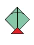
to represent 100 kites.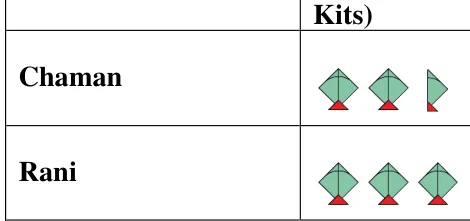
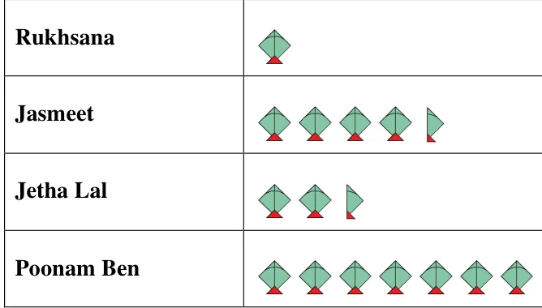
Answer the following questions:
- How many symbols represent the kites that Rani purchased?
- Who purchased the maximum number of kites?
- Who purchased more kites, Jasmeet or Chaman?
- Rukhsana says Poonam Ben purchased more than double the number of kites that Rani purchased. Is she correct? Why?
Ans.
- 3 symbols
- Poonam Ben
- Jasmeet
- Yes. Number. of kites purchased by Poonam Ben \(= 700 = 2 \times 300 + 100\)
Section 4.3
Page no. 86
Q1. In Class 2, \(\underline{\qquad}\) students were absent that day.
Ans. 5
Q2. In which class were the maximum number of students absent? \(\underline{\qquad}\)
Ans. Class 8
Q3. Which class had full attendance that day? \(\underline{\qquad}\)
Ans. Class 5
Page no. 88
Figure it Out
Q.1. How many total cars passed through the crossing between 6 am and noon?
Ans. 4450 cars
Section 4.4
Page No. 93
Q. On which item does Imran’s family spend the most and the second most?
Ans. Imran’s family spends the most on food and the second most on house rent.
Q.2. Is the cost of electricity about one-half the cost of education?
Ans. Yes,
Q.3. Is the cost of education less than one-fourth the cost of food?
Ans. Yes. Cost of education \(=\) Rs. 800 and cost of food \(=\) Rs \(3400 = 4 \times\) Rs 850
So, cost of education \(=\) less than one-fourth of cost of food.
Figure it Out
Q.1. Samantha visited a tea garden and collected data of the insects and critters she saw there. Here is the data she collected —
Help her prepare a bar graph representing this data.
Ans.
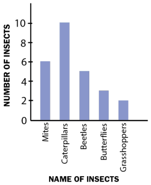
Q.2. Pooja collected data on the number of tickets sold at the Bhopal railway station for a few different cities of Madhya Pradesh over a 2-hour period.
She used this data and prepared a bar graph on the board to discuss the data with her students, but someone erased a portion of the graph.
- Write the number of tickets sold for Vidisha above the bar.
- Write the number of tickets sold for Jabalpur above the bar.
- The bar for Vidisha is 6 unit lengths and the bar for Jabalpur is 5 unit lengths. What is the scale for this graph?
- Draw the correct bar for Sagar.
- Add the scale of the bar graph placing the correct numbers on the vertical axis.
- Are the bars for Seoni and Indore correct in this graph? If not, draw the correct bar(s).
Ans.
a. 24
b. 20
c. 1 unit length \(= 4\) tickets
d.
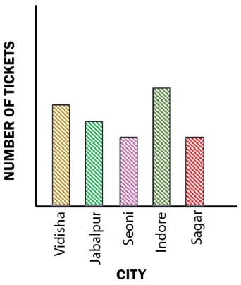
e.
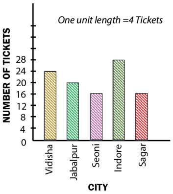
f. The bar for Seoni is correct but for Indore is incorrect.
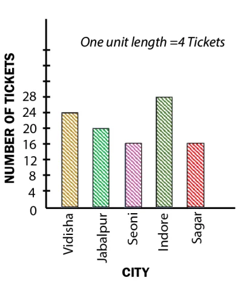
Q.3. Chinu listed the various means of transport that passed across the road in front of his house from 9 am to 10 am:
- Prepare a frequency distribution table for the data.
- Which means of transport was used the most?
- If you were there to collect this data, how could you do it? Write the steps or process.
Ans. a.
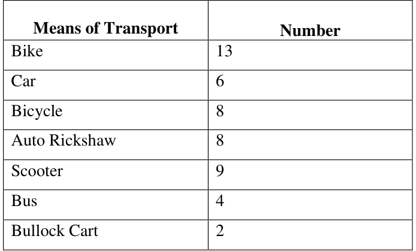
b. Bike
c. To collect the data of various means of transport, one of the ways could be –
- Prepare a table with 2 columns. First for means of transport and second for its frequency.
- List the various means of transport as they pass across the road.
- Frequency should be presented using tally marks.
Q.5. Faiz prepared a frequency distribution table of data on the number of wickets taken by Jaspreet Bumrah in his last 30 matches:
- What information is this table giving?
- What may be the title of this table?
- What caught your attention in this table?
- In how many matches has Bumrah taken 4 wickets?
- Mayank says “If we want to know the total number of wickets he has taken in his last 30 matches, we have to add the numbers 0, 1, 2, 3 …, up to 7.” Can Mayank get the total number of wickets taken in this way? Why?
- How would you correctly figure out the total number of wickets taken by Bumrah in his last 30 matches, using this table?
Ans.
- This table is giving the information about different number of wickets taken by Jaspreet Bumrah in different number of matches.
- The title of this table may be: Wickets Taken by Jaspreet Bumrah in Last 30 Matches.(think of more!)
- In this table, attention seeking point is that in 1 match 7 wickets were taken by Jaspreet Bumrah only.(think of more!)
- In 3 matches Bumrah has taken 4 wickets.
- No, Mayank can’t get the total number of wickets taken in this way. For example, 3 wickets per match were taken in 8 matches, which means total 24 wickets were taken.
- To know the total number of wickets, prepare a next column of total wickets. It will have products of corresponding numbers of the two given columns. Then the sum of the numbers in the 3rd column, will be the total number of wickets. Total number of wickets \(= 90\)
Q.6. The following pictograph shows the number of tractors in five different villages. Observe the pictograph and answer the following questions—
- Which village has the smallest number of tractors?
- Which village has the most tractors?
- How many more tractors does Village C have than Village B?
- Komal says, “Village D has half the number of tractors as Village E.” Is she right?
Ans.
- Village D.
- Village C.
- 3.
- Yes
Q.7. The number of girl students in each class of a school is depicted by a pictograph:
Observe this pictograph and answer the following questions:
- Which class has the least number of girl students?
- What is the difference between the number of girls in Classs 5 and 6?
- If 2 more girls were admitted in Class 2, how would the graph change?
- How many girls are there in Class 7?
Ans.
- Class 8.
- 6.
- If 2 more girls were admitted in class 2, the last half symbol will be converted into full symbol.
- 12.
Q.8. Mudhol Hounds (a type of breed of Indian dogs) are largely found in North Karnataka’s Bagalkote and Vijaypura districts. The government took an initiative to protect this breed by providing support to those who adopted these dogs. Due to this initiative, the number of these dogs increased. The number of Mudhol dogs in six villages of Karnataka are as follows —
Village A : 18, Village B : 36, Village C : 12, Village D : 48, Village E : 18, Village F : 24
Prepare a pictograph and answer the following questions:
- What will be a useful scale or key to draw this pictograph?
- How many symbols will you use to represent the dogs in Village B?
- Kamini said that the number of dogs in Village B and Village D together will be more than the number of dogs in the other 4 villages. Is she right? Give reasons for your response.
Ans.
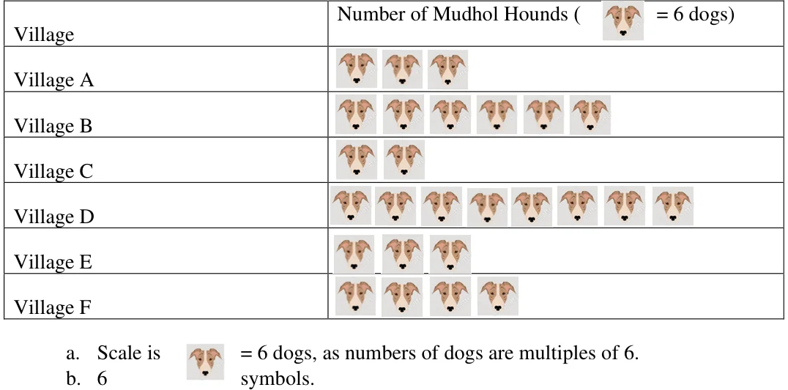
c. Yes, Kamini is right as the number of dogs in village B and village D together is 84 which is more than the number of dogs in the other 4 villages (72).
Q.9 A survey of 120 school students was conducted to find out which activity they preferred to do in their free time.
Draw a bar graph to illustrate the above data taking the scale of 1 unit length \(= 5\) students. Which activity is preferred by most students other than playing?
Ans.
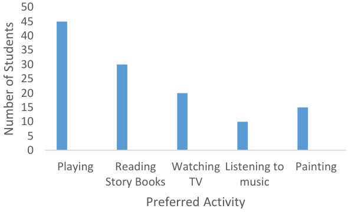
Other than playing, reading story books is preferred by most students.
Q.10 Students and teachers of a primary school decided to plant tree saplings in the school campus and in the surrounding village during the first week of July. Details of the saplings they planted are as follows —
- The total number of saplings planted on Wednesday and Thursday is \(\underline{\qquad}\).
- The total number of saplings planted during the whole week is \(\underline{\qquad}\).
- The greatest number of saplings were planted on \(\underline{\qquad}\), and the least number of saplings were planted on \(\underline{\qquad}\). Why do you think that is the case? Why were more saplings planted on certain days of the week and less on others? Can you think of possible explanations or reasons? How could you try and figure out whether your explanations are correct?
Ans.
- 70
- 310
- Saturday, Wednesday
The variation in the number of saplings planted on different days may be because of rainy season or different number of students present on different days. (Discuss for other reasons.)
Q.11. The number of tigers in India went down drastically between 1900 and 1970. Project Tiger was launched in 1973 to track and protect tigers in India. Starting in 2006, the exact number of tigers in India was tracked. Shagufta and Divya looked up information about the number of tigers in India between 2006 and 2022 in 4-year intervals. They prepared a frequency table for this data and a bar graph to present this data, but there are a few mistakes in the graph. Can you find those mistakes and fix them?
Ans. There are mistakes in the bars of 2006, 2010, 2014, 2018.
Section 4.5
Page no. 103
Figure it out
Q.1. If you wanted to visually represent the data of the heights of the tallest persons in each class in your school, would you use a graph with vertical bars or horizontal bars? Why?
Ans. To present the data of the heights of the tallest persons in each class in a school, vertical bar graph is useful as heights of persons can be compared by heights of bars easily. (Although both bar graphs can be used.) (Think of more reasons!)
Q.2. If you were making a table of the longest rivers on each continent and their lengths, would you prefer to use a bar graph with vertical bars or with horizontal bars? Why? Try finding out this information, and then make the corresponding table and bar graph! Which continents have the longest rivers?
Ans. In this case, bar graph with horizontal bars is useful as length of a river is a horizontal feature, so lengths of rivers can be compared with lengths of horizontal bars easily. (Although both bar graphs can be used.) (can you think of any other reasons?)